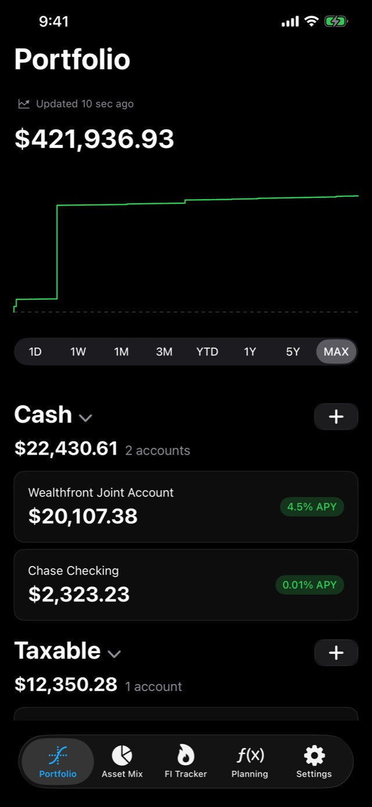
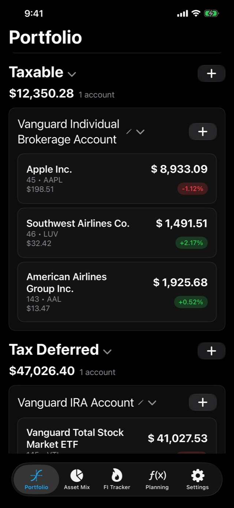
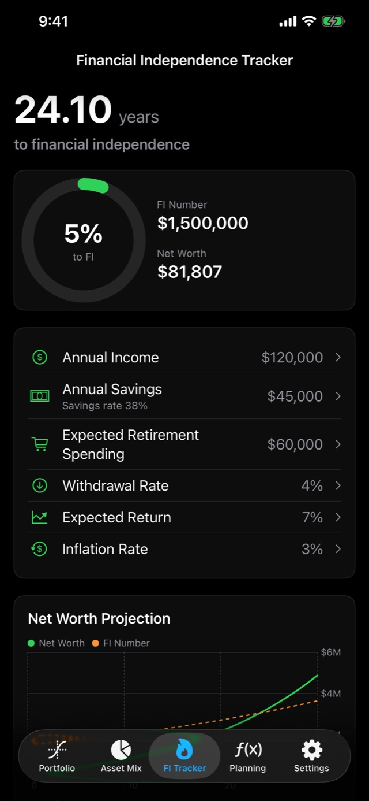
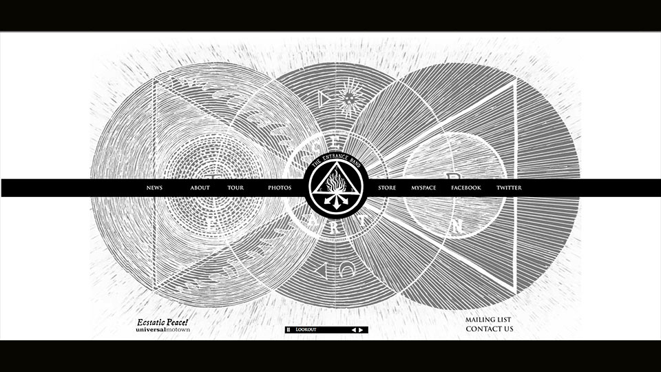
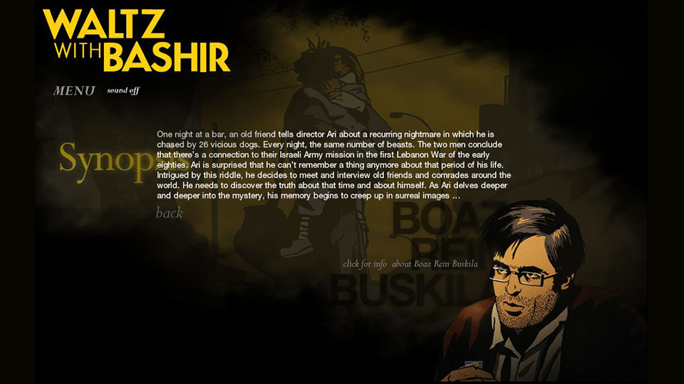
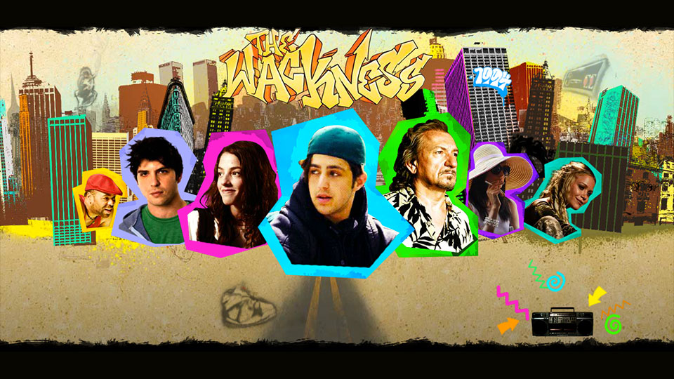
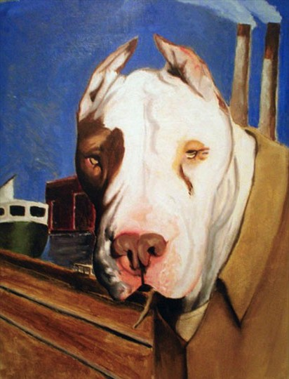

Staff level iOS engineer building local AI and well crafted mobile experiences.
Ten years shipping apps people use every day, from Vimeo to airline apps at American and Southwest. Before iOS, I studied computer science and then art, and worked in web design and development.
01 Selected work



01 / 03 Portfolio
02 Earlier work






03 About
I lead teams, shape architecture, and bring on-device AI into real products without sacrificing privacy or polish.
I studied computer science before going to art school, where graphic design led me into web design and development, and from there to iOS. I still think like a designer. I've worked on campaigns for Coca-Cola and the Olympics, designed movie websites, built sites for major music artists, and made album art.
Swift / SwiftUI — Foundation Models — Architecture — Team leadership — Design systems
